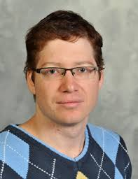

Research in Quantum Field Theory
I work on foundational aspects of QFT and applications including extended operators and defects, renormalization group flows on defects, symmetry defects, and connections to gravity. Collaborations and recent work focus on defects, crystal disclinations, and more.

About
I study general theorems and formal structure of quantum field theory as well as concrete applications. Since 2021 I have been exploring extended operators and defects in QFT with collaborators, proving results about RG flows and studying magnetic and charged defects and symmetry defects.
News
- 2024: Delivered the Annual Racah Lecture.
- Recent work on renormalization group flows for line and surface defects.
- Lecture series on defects in QFT — videos and slides available.